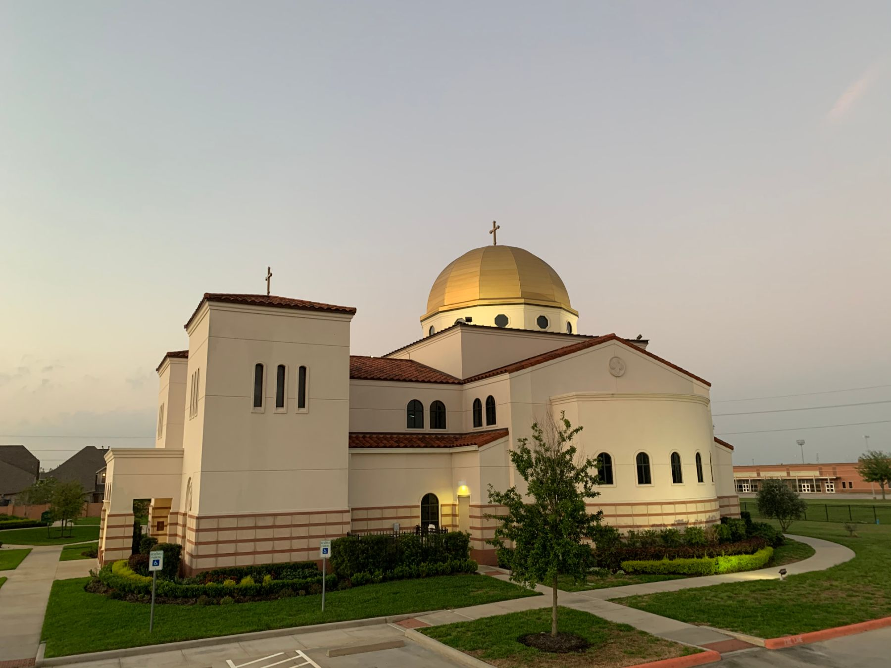

An Antiochian Orthodox parish in Spring, Texas
Ancient faith. Living hope. Welcome home.
For two thousand years the Orthodox Church has worshiped the risen Christ. Come and see — Divine Liturgy every Sunday at 10 AM, and a seat saved for you at coffee hour.
New here?
Your first visit, without the guesswork
Never been to an Orthodox service? You’re in good company — much of our parish family once walked in for the very first time too. We’ll show you what to expect, where to park, what to wear, and why there’s incense.
What to expect“Our life and our death is with our neighbor. If we gain our brother, we have gained God.”
Worship with us
Weekly services
| Saturday | 5:00 PM | Great Vespers |
|---|---|---|
| Sunday | 9:00 AM | Orthros (Matins) |
| Sunday | 10:00 AM | Divine Liturgy |
Feast-day Liturgies, Vespers, and Lenten services are announced weekly — see the parish calendar and bulletin.
Find us
7202 FM 2920, Spring, TX 77379
In north Houston — on FM 2920, a mile east of the Grand Parkway and six miles west of I-45. Plenty of free parking on site.
Parish office: (281) 251-6000 · Tue–Thu 9 AM–4 PM, Fri 9 AM–noon

Install this site as an app — service times, giving, and prayer requests, one tap away.